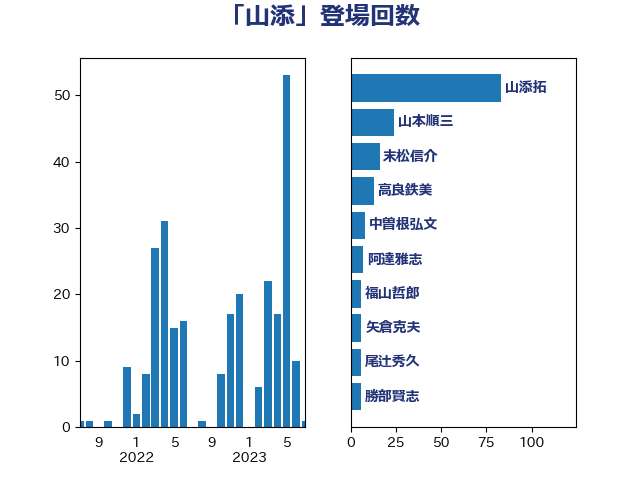

単語「山添」

| 山添拓 | 日本共産党 | 83 回 |
| 山本順三 | 自由民主党 | 24 回 |
| 末松信介 | 自由民主党 | 16 回 |
| 高良鉄美 | 無所属 | 13 回 |
| 中曽根弘文 | 自由民主党 | 8 回 |
| 阿達雅志 | 自由民主党 | 7 回 |
| 福山哲郎 | 立憲民主党 | 6 回 |
| 矢倉克夫 | 公明党 | 6 回 |
| 尾辻秀久 | 無所属 | 6 回 |
| 勝部賢志 | 立憲民主党 | 6 回 |
| 浜口誠 | 国民民主党 | 5 回 |
| 山東昭子 | 自由民主党 | 5 回 |
| 松沢成文 | 日本維新の会 | 4 回 |
| 宮沢洋一 | 自由民主党 | 4 回 |
| 嘉田由紀子 | 無所属 | 4 回 |
| 三原じゅん子 | 自由民主党 | 4 回 |
| 清水貴之 | 日本維新の会 | 3 回 |
| 山田宏 | 自由民主党 | 3 回 |
| 小西洋之 | 立憲民主党 | 3 回 |
| 仁比聡平 | 日本共産党 | 3 回 |
| 井野俊郎 | 自由民主党 | 3 回 |
| 片山さつき | 自由民主党 | 2 回 |
| 榛葉賀津也 | 国民民主党 | 2 回 |
| 林芳正 | 自由民主党 | 2 回 |
| 松村祥史 | 自由民主党 | 2 回 |
| 岸田文雄 | 自由民主党 | 2 回 |
| 大島九州男 | れいわ新選組 | 2 回 |
| 堀井巌 | 自由民主党 | 2 回 |
| 鶴保庸介 | 自由民主党 | 1 回 |
| 鈴木俊一 | 自由民主党 | 1 回 |
| 臼井正一 | 自由民主党 | 1 回 |
| 紙智子 | 日本共産党 | 1 回 |
| 福島みずほ | 社会民主党 | 1 回 |
| 石井準一 | 自由民主党 | 1 回 |
| 浜田靖一 | 自由民主党 | 1 回 |
| 松川るい | 自由民主党 | 1 回 |
| 斉藤鉄夫 | 公明党 | 1 回 |
| 岩渕友 | 日本共産党 | 1 回 |
| 岩本剛人 | 自由民主党 | 1 回 |
| 山下芳生 | 日本共産党 | 1 回 |